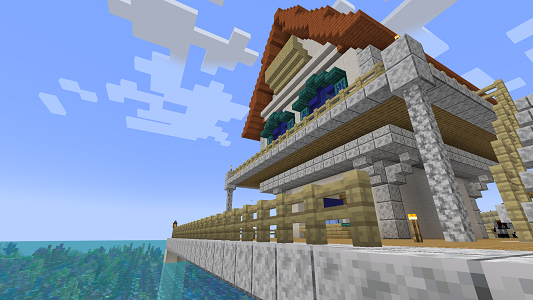
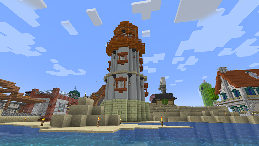
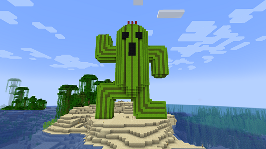

施設建物紹介
#par_00 パルプンテ別荘

| build data | 2024/09/05 | 座標 | x:____ y:____ z:____ |
|---|
二次入植ラッシュとして島南岸に現れたパルプンテの別荘。海に突き出すようにつくられており、 眼下にはサンゴ礁の絶景が広がる。アカシアのオレンジ色が映える屋根が特徴で南海のブルーとの調和が素敵。
ただし、島の南岸は内側へえぐれており深海にはドラウンドがよく湧くので素潜りで遊ぶにはやや危険である。
#par_01 第二ゲート灯台

| build data | 2024/09/05 | 座標 | x:____ y:____ z:____ |
|---|
島南西岸に発生した第二ゲートに施された装飾。パルプンテの別荘とともに明るいオレンジ色で色付けされている。
残念なことに島の南部はまだまだ入居者や施設がまばらのため、利用者もそう多くはないが、 これからの発展に期待できるランドマークである。
#par_02 サボテンダー立像

| build data | 2024/09/05 | 座標 | x:____ y:____ z:____ |
|---|
島の南にある小島に建設された、砂漠を走るニクいアイツ。とても大きくてインパクトがあるうえ （特に中に何かあるわけではないが）中に入れたりもする。
2024年年末にこっそり東西地下道へのトロッコ足元に伸び、水量EVも用意された。今後何かに…なるのか？